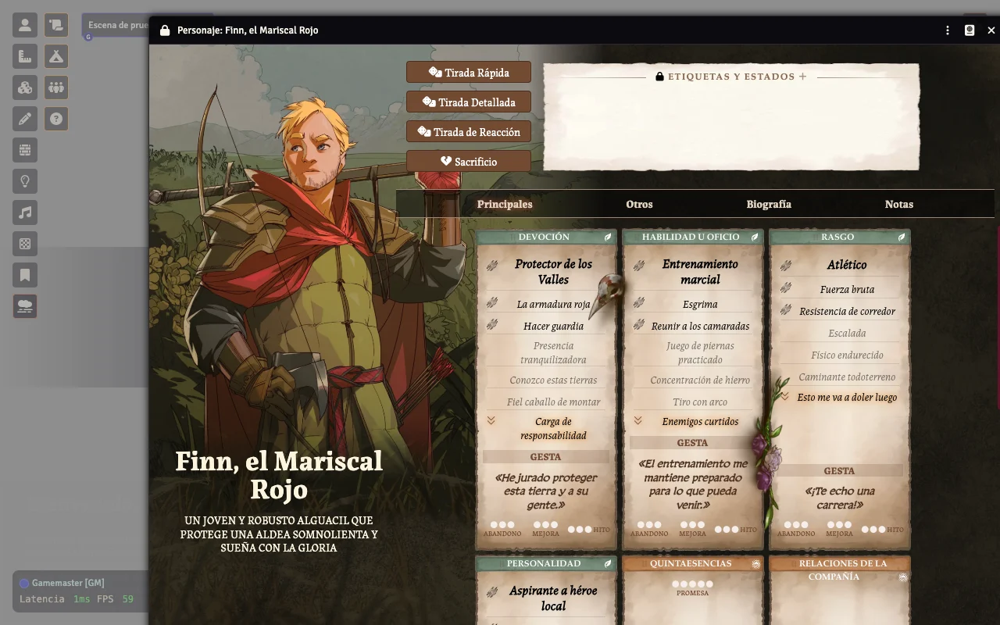
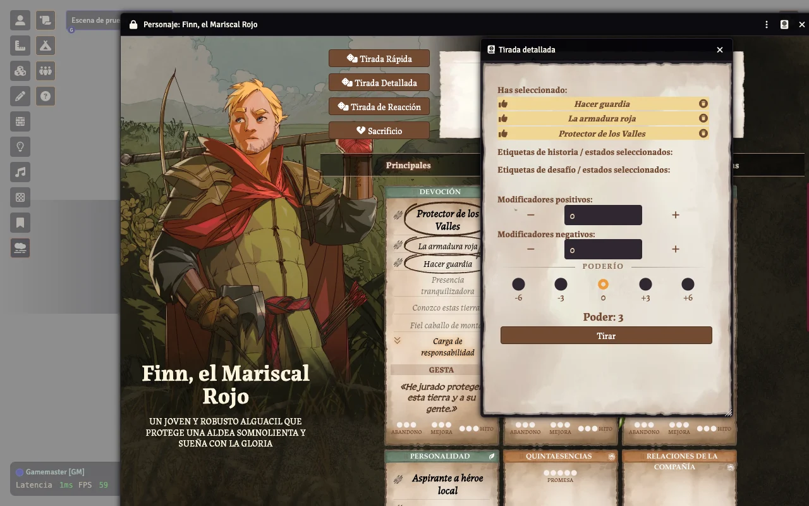
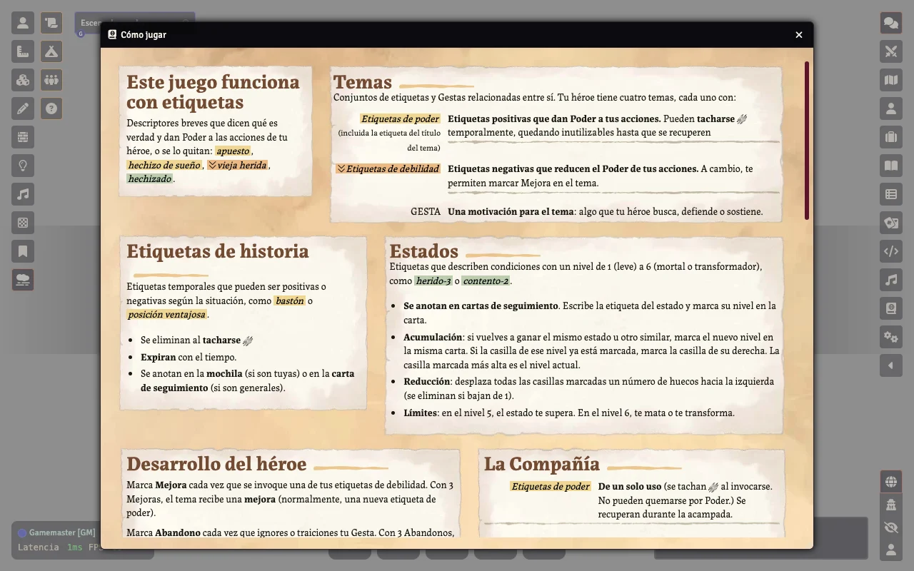

Qué traduce
Interfaz487 cadenas del sistema, unificadas y corregidas: Narrador, Poder y Poderío, Gesta, Compañía…
Textos fijosAjustes, atajos, menús del editor, diálogos y avisos que el sistema escribe en inglés.
Cómo jugarLa ventana de reglas, traducida entera.
Visitas guiadasLas del Narrador y la del héroe, más acampada, acción de grupo y sacrificio.
Así se ve



Instalar en Foundry
Necesitas el sistema Legend In The Mist (≥ 14.5.4). En Add-on Modules → Install Module → Manifest URL:
https://github.com/ManuRomera/mr-litm-es/releases/latest/download/module.json
Activa el módulo en tu mundo y pon Foundry en Español (Configuración → Idioma).